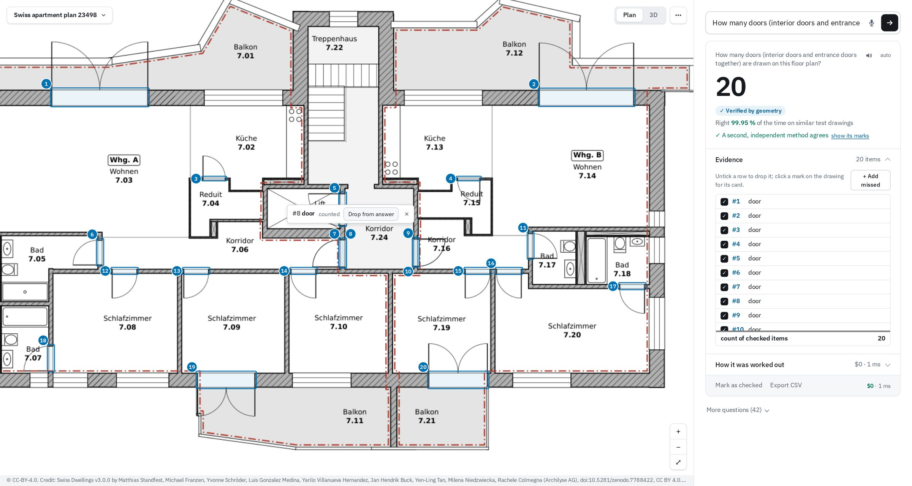
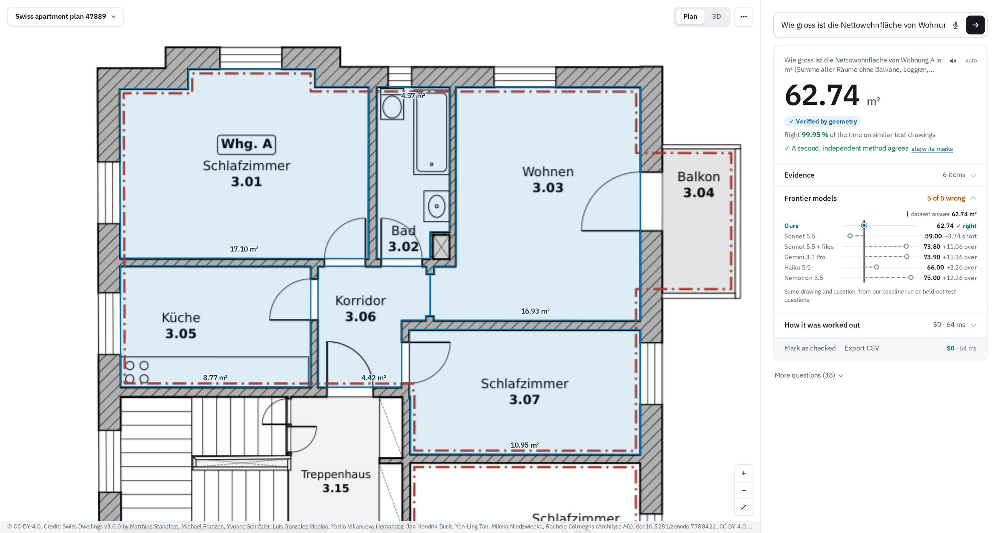
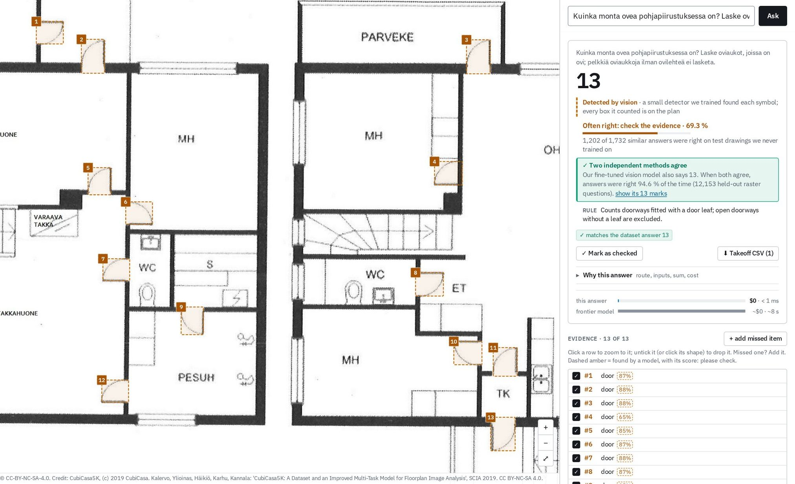
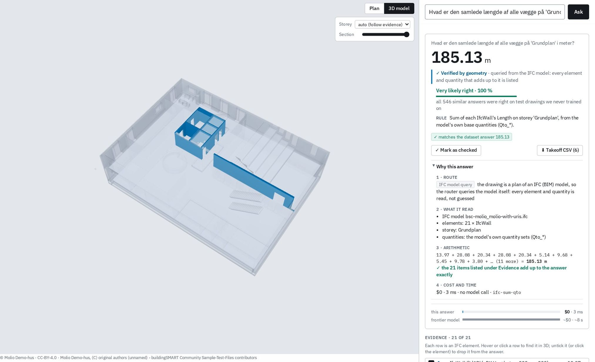
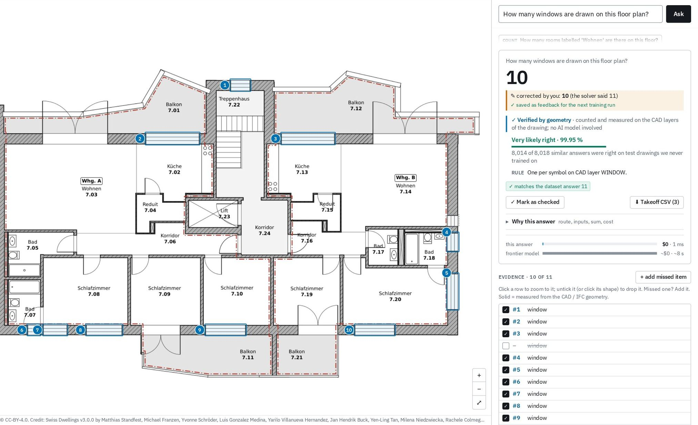

Junction 2026 · Stoa: Make Blueprints Talk
Blueprints That Talk
Ask a construction drawing or a BIM model a question in English, Finnish, German, French, Italian or Dutch. Every answer comes with its proof, drawn on the drawing.
89.5 %
right on all 25,420 questions from drawings we never trained on
95.4 % when it answers · says “not sure” on 12.5 %
69.8 %
best frontier model
(Claude Sonnet 5.5) given the same files
$0.013
API per 1,000 questions, + ~$0.005 local
compute (Sonnet with the files: $25.76)

“How many doors?” 20, each numbered on the plan.
Blueprints That Talk
2
The problem
Quantity takeoff is slow by hand, and AI gets it wrong with total confidence.
Counting doors, measuring rooms, summing walls: estimates and bills of quantities are built on these numbers. Two real answers from a frontier model on our test split, even when it also gets the CAD or IFC file:
Swiss apartment plan (PDF + its DXF):
“What is the net floor area of apartment B in m²?”
Claude Sonnet 5.5, drawing only94.73 m²
… also given the DXF file94.73 m²
Correct answer108.3 m²
Ours, from the CAD geometry108.29 m²
BIM model, Dutch site (plan PDF + its IFC):
“Total net side area of all walls on ‘Attic’, in m²?”
Claude Sonnet 5.5, drawing only201 m²
… also given the IFC model598.73 m²
Correct answer353.715 m²
Ours, from the IFC model353.715 m²
Blueprints That Talk
3
Measured, not assumed · the fair baseline
Even given the CAD and IFC files, a frontier model gets 70 % right.
Claude Sonnet 5.5, drawing only: 63.2 % overall… plus the CAD / IFC files: 69.8 %
Finnish scanned plans · counts
With the files: 69.8 % [60.9–78.4], $25.76 per 1,000 questions, ~16 s each. The files fix IFC, not scans: Finnish plans stay at 63.6 %. Wrong answers look as sure as right ones.
Blueprints That Talk
4
Our approach
Route each question to the cheapest method that can answer it exactly, and return the proof.
Question + drawing6 languages tested; PDF · DXF · PNG · IFC
→
CAD plans: doors, windows and room outlines read straight from the CAD file’s layers, measured exactly
BIM models: counts, areas, lengths and volumes per storey, read from the IFC model
Scanned plans: our own symbol detector (trained on a local RTX 4070), with a confidence that says how often it is right; our fine-tuned vision model gives a second opinion
Free text: Claude Haiku 5.5, a small frontier LLM, only for free text. It must point to the model facts behind each claim; it also rewrites unusual wording into a question the exact methods understand
→
Answer + proofnumbered boxes, room polygons with m², elements lit in 3D. The evidence adds up to the answer.
The model only ever chooses what to measure. Geometry does the measuring. When a solver is unsure it says “not sure” instead of guessing.
Stoa’s brief asks for approaches next year’s models won’t make obsolete: “hybrids of frontier models + CV + 3D/geometry + small fine-tuned models”. That is this router.
Who answers the 25,420 test questions: exact CAD / IFC geometry 34.7 % · our trained detector (+ fine-tuned vision model as second opinion) 64.9 % · Claude Haiku 5.5, only the 110 free-text questions, 0.4 %
Blueprints That Talk
5
Demo · verify in seconds
The answer is counted out on the drawing.
“How many doors?” 20, each numbered on the plan, read from the CAD layers. “Very likely right”, and reading the PDF itself agrees. No model call, $0.
Swiss Dwellings v3.0.0, M. Standfest et al. (Archilyse AG), doi:10.5281/zenodo.7788422, CC BY 4.0

Asked in German: net area of apartment A, 6 rooms outlined and summed to 62.74 m². Five frontier baselines on the same question: 5 of 5 wrong.
Swiss Dwellings v3.0.0, M. Standfest et al. (Archilyse AG), doi:10.5281/zenodo.7788422, CC BY 4.0
Blueprints That Talk
6
Demo · scans and BIM
Scans get boxes. BIM models light up in 3D.

Finnish plan, asked in Finnish: the detector boxes each of the 13 doors; our fine-tuned vision model also says 13. When both agree: 94.6 % right.
CubiCasa5K, © 2019 CubiCasa; Kalervo, Ylioinas, Häikiö, Karhu, Kannala, SCIA 2019; CC BY-NC-SA 4.0

BIM model, asked in Danish: total wall length. The 21 walls light up in 3D and “Why this answer” shows the sum: 185.13 m, exact.
Molio Demo-hus, buildingSMART Community Sample-Test-Files contributors, CC BY 4.0
Blueprints That Talk
7
Results · drawings we never trained on · accuracy and cost
+20 points over the best frontier model, at 1/1,900 of the cost.
Where a CAD or IFC file exists, the exact answer is in it and we read it; a frontier model given the same files still misses about 1 in 5 on the Swiss plans and 2–9 % on IFC. Scanned plans have no such file: there we score 84.2 % vs 63.6 % (92.8 % when answered). Whole drawings held out: no test drawing was used to build anything.
| source · type | n | ours | ours, when answered (≥ 0.5) | ours declines | Sonnet + files* | Sonnet* |
|---|
| Swiss plans · counts | 5,580 | 99.96 % | 99.96 % | 0 % | 81.5 % | 79.6 % |
| Swiss plans · room areas | 2,634 | 99.92 % | 99.92 % | 0 % | 79.6 % | 38.9 % |
| IFC models · counts | 136 | 100.0 % | 100 % | 0 % | 96.3 % | 42.6 % |
| IFC · areas, volumes, lengths | 464 | 100.0 % | 100 % | 0 % | 91–98 % | 4–14 % |
| Finnish scanned plans · counts | 16,496 | 84.2 % | 92.8 % | 19.1 % | 63.6 % | 63.6 % |
| IFC-Bench · free text** | 110 | 38.2 % | 41.1 % | 13.6 % | 9.1 % | 9.1 % |
| All test questions | 25,420 | 89.5 % | 95.4 % | 12.5 % | 69.8 % | 63.2 % |
$0.013 API + ~$0.005 local compute
ours, per 1,000 questions · 0.04 s each
$25.76
Sonnet 5.5 + files, per 1,000 · ~16 s each
$13.06
Sonnet 5.5, drawing only · Haiku 5.5: $1.21, 60.6 %
Blueprints That Talk
8
Verified, not just claimed · four layers
Four ways to check an answer.
- 1 · Evidence adds up. The numbered boxes, room outlines and BIM elements sum to the answer; untick one and it recomputes. The boxes match independent hand labels at > 90 %; only ~2.5 % of right counts are right by luck.
- 2 · Confidence you can take literally. Scanned-plan answers marked ≥ 0.95 are right 98.3 % of the time. Saying “not sure” below 0.5: answers 87.5 % of questions, 95.4 % of those right.
- 3 · Second opinion. A different method (re-reading the PDF, the IFC plan sheet, our fine-tuned vision model on scans) re-derives the answer. Both agree → right on 99.98 % of Swiss and IFC questions; it caught a real Swiss area error. Disagree → confidence halved, both shown.
- 4 · Every LLM number traced. Each number in a free-text answer is matched to the model facts it cites, or flagged.
Blueprints That Talk
9
Why this won’t be obsolete next year
A better model still guesses from pixels. We read the number from the geometry.
- Exact where exactness exists. CAD layers and BIM quantities hold the true answer; reading them costs nothing per question and needs no model.
- Proof is the product. A professional signs off a takeoff only if they can check it. Every answer ships with the elements behind it, and its arithmetic.
- Models are plug-ins. When a stronger or cheaper vision model ships, it slots into the scanned-plan and fallback paths behind the same evidence contract.
- Corrections are training data. Every unticked or added item is a labelled example for the small local models.

Disagree? Click. Untick window #4 and the answer becomes 10 (“the solver said 11”), saved as feedback.
Swiss Dwellings v3.0.0, M. Standfest et al. (Archilyse AG), doi:10.5281/zenodo.7788422, CC BY 4.0
Blueprints That Talk
10
Path to product for Stoa
A takeoff engine inside the AI-native construction OS.
- Now: drop in a drawing or model, ask in the site’s language, get numbers with a review trail. The same question in English and in Finnish, German, French, Italian or Dutch gets the same answer on all 12,654 test pairs.
- Next: whole drawing sets and revisions: re-run every question on every revision and flag what changed.
- Then: feed checked quantities into estimates, procurement and progress tracking.
- Unit economics: $0.013 API + ~$0.005 local compute per 1,000 questions: no paid calls for numbers, our own small models on scans, Claude Haiku 5.5, a small frontier LLM, only for free text.
- Trust: answers a human can verify in seconds, an honest “not sure” instead of a guess, and an evaluation cross-audited by a second AI agent (Codex): no leakage, the recount reproduces.
- Open code: MIT-licensed and reproducible: dataset + one command, no API keys needed for numeric answers.
Team
Built at Junction 2026, Espoo, 13–15 Nov, with Claude Code.
Source: github.com/Zawaer/datum (MIT)
Reproduce:
python eval.py --solver router --split test --judge
analysis/run_all.sh

Try it: open the demo, press ▶ Start the 60-second tour, then ask your own question.
Tabs: “IFC text Q&A” is the free-text family (IFC-Bench, 38.2 %). “US drawing sets” are 3 real drawing sets from a US practice, answered by the same general path your uploads take; they have no held-out split, so they are not in the results.
Drawing: Swiss Dwellings v3.0.0 (Archilyse AG), CC BY 4.0